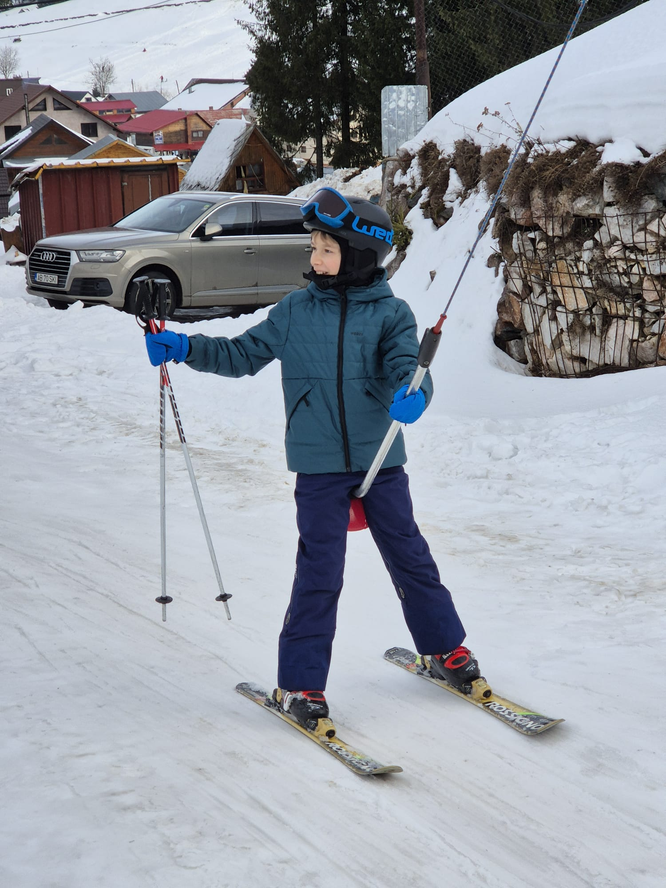

Mie îmi place foarte mult să schiez!
Schiul este activitatea mea preferată! O ador! Atunci când schiez, explorez locuri noi, văd peisaje minunate, prind viteză și văd multă zăpadă pe drum! Schiatul este o combinație între munca oamenilor și mama natură!
Eu schiez la un nivel avansat. Nu chiar expert, dar mă descurc destul de bine. Știu multe tehnici avansate și cum să mă ridic dacă vreodată cad și cel mai important lucru: știu CÂND să schiez. De exemplu, nu poți schia în anumite zone dacă este ceață sau când dimineața zăpada este foarte tare, aproape ca gheața.
În general, schiez pe Vârtop I, dar atunci când zăpada este foarte tare, e întunecat sau ceață, din păcate, sunt limitat la Vârtop II. Merg pe Vârtop I mai des, deoarece pârtia este de vreo șapte ori mai lungă și de cinci ori mai lată decât cealaltă.
Echipamentul meu este de calitate, ca să îmi fie cald și comod. Fără echipament de calitate, nu pot schia bine.
Sunt foarte fericit atunci când schiez!